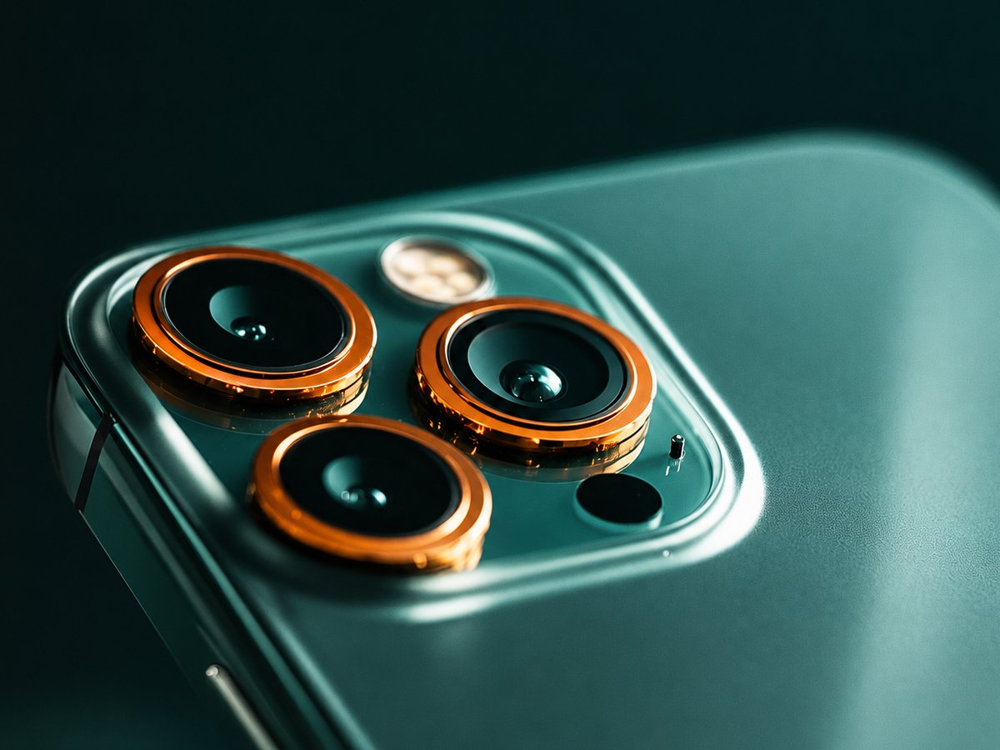
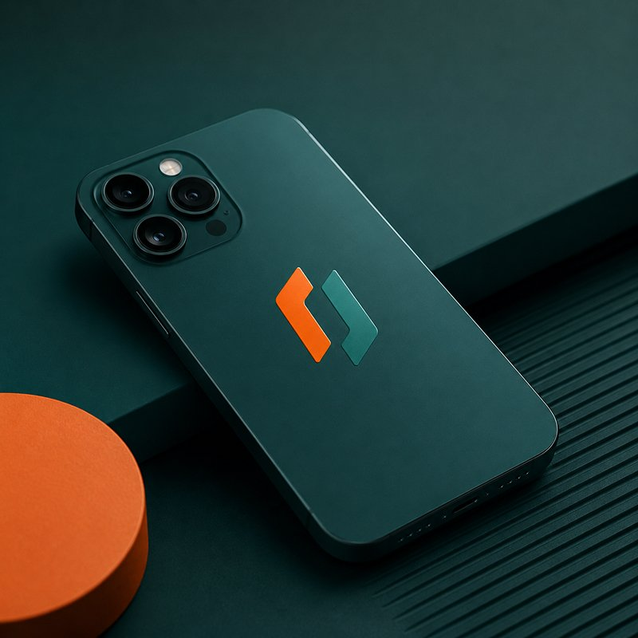

Vo.Lumi
Logo design and brand identity

An identity born before everything else.
Vo.Lumi is a small company founded by two girls from Cesena who produce social content using only the smartphone. The limitation of the tool is their signature — speed and simplicity without sacrificing professionalism.
Being a newly born reality, the logo was the first narrative element built: a modular identity designed to grow over time.
"Volumes: the unit of measurement of solids. And the solid, with the right light, generates a shadow. The same light needed for photography. The same photography taken with a smartphone — which is, in its own way, a parallelepiped."

The sign is born from the extrusion of a rectangle in an almost isometric view — the shape of the smartphone seen in perspective. From its wireframe, two identical signs are extracted, mirrored and flipped, interlocking between solids and voids recreating the solid of a certain Vo.Lume.
A logo that doesn't illustrate the brand's work — it is conceptually.
Typography chooses Montserrat for everything: simplicity and clarity first, no distraction. The colour system works on teal and orange contrast — the logic of cinematic colour grading applied to brand communication. The two colours are not decorative: orange for content, petrol green for clients. A chromatic grammar that organises meaning before aesthetics.


